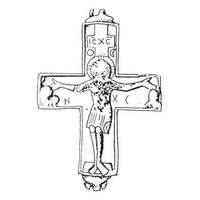
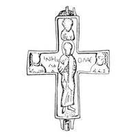

Catalog › CE-0858 · KOR2003-II.2.1.1
Encolpion întreg cu imagini șterse, inscripții păstrate parțial
sec. XII (1101–1200) · Verbiv, raionul Berejanî, regiunea Ternopil, Ucraina · Muzeul regional din Ternopil (TKM), inv. fără număr
double-sided reliquary cross (enkolpion), aramă; c. XII (1101–1200); found at Verbiv, raionul Berejanî, regiunea Ternopil, Ucraina; kept at Muzeul regional din Ternopil (TKM).




Identificare
- Categorie
- Encolpion bivalv (relicvar)
- Material
- Aramă
- Tehnică
- Turnare în relief
- Stare
- Întreagă
- Dimensiuni
- Î 107 × L 73 mm
Iconografie
- Descriere avers
- Imagini șterse, nu clare; inscripții păstrate parțial. Inscripții adâncite (turnate?): ІС ХС Н ХСУ.
- Descriere revers
- Inscripții adâncite: ННК ОЛАЄ/Л[А]А. Balamaua din stânga sus a valvei de revers este pierdută.
- Inscripții
- ІС ХС Н ХСУ; ННК ОЛАЄ/Л[А]А
- Limba
- Slavonă
Datare și atribuire
- Datare
- sec. XII (1101–1200)
- Centru
- Necunoscut
- Tipologie
- Korzukhina–Peskova 2003, tip II 2 1
Descoperire
- Localitate
- Verbiv
- Regiune
- raionul Berejanî, regiunea Ternopil
- Țară
- Ucraina
- Context
- Descoperire izolată
- Anul
- 1948
Păstrare și referințe
- Colecție
- Muzeul regional din Ternopil (TKM)
- Nr. inventar
- fără număr
- Bibliografie
- G. F. Korzukhina, A. A. Peskova, Древнерусские энколпионы. Нагрудные кресты-реликварии XI–XIII вв., Sankt-Petersburg, 2003 [Korzukhina–Peskova 2003], p. 84, cat. nr. II 2 1/1, reprodusă la Табл. 36 (planșe, p. 278). Bibliografie citată în sursă: Ягодинська 1993, 68, № 1, рис. 4, 1 (locul descoperirii indicat eronat).
- Figura
- Табл. 36
- Planșe
- Korzukhina–Peskova 2003, Табл. 36 (planșă fără paginație proprie în PDF; p. 278 tipărită)
- Observații
- Datare după Peskova: sec. XII. Circumstanțe: Descoperire întâmplătoare în 1948. Dimensiuni: h 9,0 cm fără balamale. Foto: M. A. Iagodinskaia. Lectura inscripțiilor de verificat pe original. Coordonate: nu sunt date în sursă.
Citare: Corpus Encolpiorum, CE-0858, Encolpion întreg cu imagini șterse, inscripții păstrate parțial, https://vitaliejosanu1979-ux.github.io/primul-meu-proiect/piese/KOR2003-II.2.1.1/ (accesat 2026-10-17).